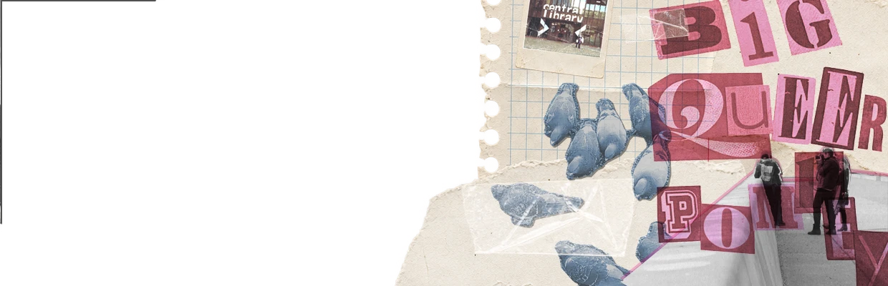
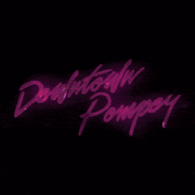

Scrapbook
Scroll forever. Pan around a whole wall of photos, flyers, tickets and zines — filter by tag, and see the city the way everyone else pinned it up.
Browse the archive
Scroll forever. Pan around a whole wall of photos, flyers, tickets and zines — filter by tag, and see the city the way everyone else pinned it up.
Browse the archive
Step inside a 3D room built from the archive itself — move to look around, click what catches your eye, read the story behind it.
Best viewed with the sound onThe clear, fast, plain-text way in — built for researchers, screen readers, and anyone who just wants an answer.
Five years of material, digitised and catalogued by five people — the tools, the choices, and the thinking behind it are part of the archive too.
Read the process